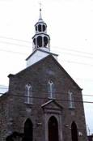
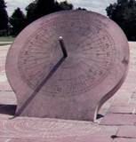
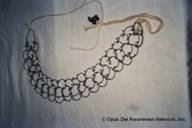
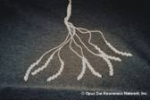

Chapter 7 Annotation List

Chapter 7
Mickey Gilchrist
Eglise Saint-Sulpice
Sainthood
Numeraries
Oculus
Corporal mortification
Penance
Convent [ME. a. AF. covent, cuvent, couvent = OF. convent, mod.F. couvent = Pr. covent, Cat. couvent, Sp. and It. convento: L. convent-um (u- stem) assembly, company, f. conven re to come together] A company of men or women living together in the discipline of a religious order and under one superior; a body of monks, friars, or nuns forming one local community. Oxford English Dictionary online: http://www.oed.com/

Convent at the Church of Saint-Sulpice. http://www.smartweb.fr/VirtualVisit/Monument/saint-sulpice/photos_zoom.asp?photo=2
Eglise Saint-Sulpice Eglise is a French word for church, and Saint-Sulpice is a church in Paris; “Saint-Sulpice church.” Famous church in Paris, France. See Chapter 5.

http://www.patrimoine-religieux.qc.ca/ssulpice/ssulpicee.htm
Sainthood- [f. SAINT n. + -HOOD.] The condition, status, or dignity of a saint; also, saints collectively. Taken from the Oxford English dictionary online: http://www.oed.com/
Canonization [ad. L. canoniz ti n-em, n. of action f. canoniz re to canonize: cf. F. canonisation.] The action of canonizing; esp. formal admission into the calendar of saints. Oxford English Dictionary online: http://www.oed.com/
Numeraries Opus Dei celibate members. They perform all the practices of Opus Dei in order to reach “Spirit of Opus Dei.” For more information refer to Corporal mortification at http://www.odan.org/corporal_mortification.htm
Oculus [< classical Latin oculus eye, also bud, knob at the centre of the spiral scroll adorning capitals, marking resembling an eye. Cf. French oculus small round church window (1852; cf. sense 2). A round or eyelike opening or design; spec. a circular window or piece of tracery (esp. in a church), or an opening at the apex of a dome. Oxford English Dictionary online: http://www.oed.com/.
Gnomon- [a. Gr.  inspector, indicator
(spec. the gnomon of a dial, a carpenter's square), f. -,
inspector, indicator
(spec. the gnomon of a dial, a carpenter's square), f. -,  to perceive, judge,
KNOW. The proximate source
may have been L. or F. gnomon.] A pillar, rod, or other object
which serves to indicate the time of day by casting its shadow upon a marked
surface; esp. the pin or triangular plate used for this purpose in an ordinary
sun-dial. Oxford English Dictionary online: http://www.oed.com/.
to perceive, judge,
KNOW. The proximate source
may have been L. or F. gnomon.] A pillar, rod, or other object
which serves to indicate the time of day by casting its shadow upon a marked
surface; esp. the pin or triangular plate used for this purpose in an ordinary
sun-dial. Oxford English Dictionary online: http://www.oed.com/.

http://www.du.edu/~jcalvert/astro/crandial.jpg.

Corporal mortification Corporal mortification is regularly practiced in Opus Dei, it is mandatory if one wishes to live the "Spirit of Opus Dei" fully. It consists of different methods of practices which inflict pain on the body such as the cilice, or discipline. Listed below are the ways Opus Dei numeraries practice corporal mortification:
-

Cilice: a spiked chain worn around the upper thigh for two hours each day, except for Church feast days, Sundays, and certain times of the year. This is perhaps the most shocking of the corporal mortifications, and generally Opus Dei members are extremely hesitant to admit that they use them. It is a painful mortification which leaves small prick holes in the flesh, and makes the Opus Dei members tentative about wearing swim suits wherever non-Opus Dei members may be. -

Discipline : a cord-like whip which resembles macrame, used on the buttocks or back once a week. Opus Dei members must ask permission to use it more often, which many do. The story is often told in Opus Dei that the Founder was so zealous in using the discipline, he splattered the bathroom walls with streaks of blood. - Cold Showers : Most numeraries take cold showers every day and offer it up for the intentions of the current Prelate.
- Meals : Numeraries generally practice one small corporal mortification at every meal, such as drinking coffee without milk or sugar, not buttering one's toast, skipping dessert, not taking seconds, etc. For the most part, eating between meals is not practiced. Opus Dei members fast on the Church's prescribed days for fasting, but otherwise must ask for permission to fast on their own.
- The Heroic Minute : Numeraries are encouraged to jump out of bed and kiss the floor as soon as the door is knocked in the morning. As they kiss, they say "Serviam," Latin for "I will serve."
- Silences : Each night after making an examination of conscience, numeraries do not speak to one another until after Holy Mass the following morning. (They do not say "Good morning" to anyone as they are getting ready.) In the afternoons, they try to avoid speaking until dinnertime. On Sundays, numeraries generally do not listen to music, especially in the afternoons.
Some forms of corporal mortification differ according to your gender, as the following table shows:
| Female Numeraries |
Male Numeraries |
| Sleep on boards laid on top of the mattress. Sleep without a pillow once a week. May not smoke or enter a bar. The Founder believed that women had passions that required more discipline to tame. |
Sleep on the floor once a week. Sleep without a pillow once a week. Allowed to smoke and go to bars with recruits, for the purpose of drawing them closer to Opus Dei. |
http://www.odan.org/corporal_mortification.htm
Penance- [a. OF. peneance, -aance, -ance, pennance (12th c. in Godef.): L. pænit ntia, f. pænit nt-em PENITENT: see -ANCE. This popular OF. form was gradually ousted from French by the ecclesiastical form pénitence, a new adaptation of the L.] The performance of some act of self-mortification or undergoing of some penalty, as an expression of penitence; any kind of religious discipline, whether imposed by ecclesiastical authority, or voluntarily undertaken, in token of repentance and by way of satisfaction for sin; penitential discipline or observance; spec. in Eccl. use, such discipline or observance, officially imposed by a priest upon a penitent after confession, as an integral part of the sacrament of penance. Oxford English Dictionary online: http://www.oed.com/.